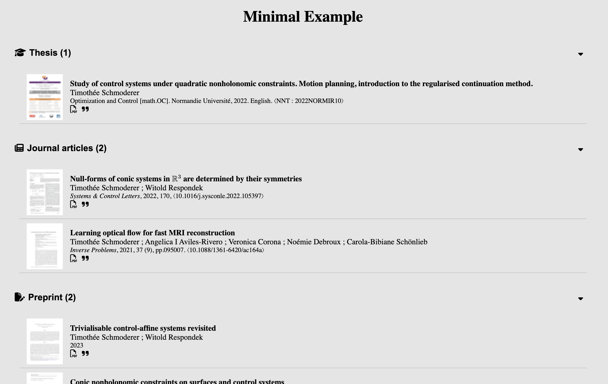
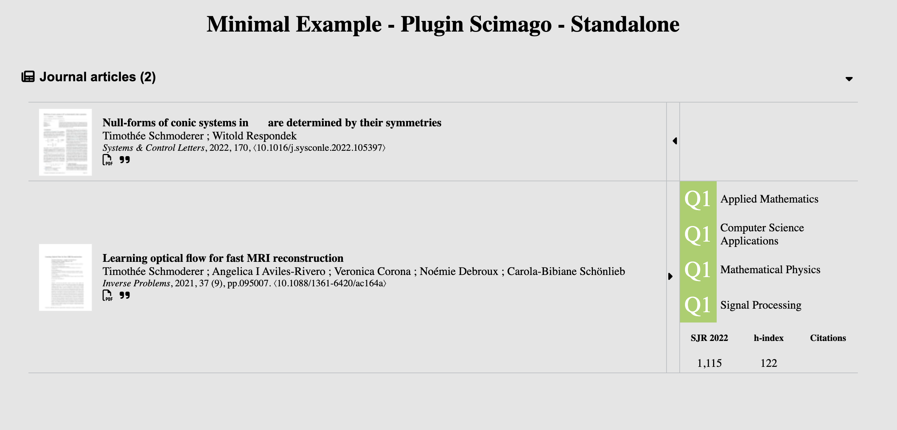

Ce dépôt contient un module JavaScript qui facilite l'intégration de la bibliographie HAL d'un auteur ou d'une auteure dans un site web. Le code utilise l'API HAL pour récupérer les données et les présente dans un style similaire à celui du CV HAL. Le package propose également plusieurs plugins pour enrichir les informations affichées.
Pour intégrer une bibliographie HAL dans un site munissez vous de l'idHal du chercheur ou de la chercheuse concerné(e).
Téléchargez la dernière release et extrayer les fichiers hal.js et hal.css depuis le fichier "dist.zip".
A l'endroit où vous souhaitez intégrer la bibliographie insérez le nœud HTML suivant
<div id="hal-bibliography-integrator"></div>
Dans le <head> de votre page, insérez le code suivant pour charger les ressources CSS :
<link rel="stylesheet" href="https://cdnjs.cloudflare.com/ajax/libs/font-awesome/6.3.0/css/all.min.css" integrity="sha512-SzlrxWUlpfuzQ+pcUCosxcglQRNAq/DZjVsC0lE40xsADsfeQoEypE+enwcOiGjk/bSuGGKHEyjSoQ1zVisanQ==" crossorigin="anonymous" referrerpolicy="no-referrer" />
<link rel="stylesheet" href="./path/to/hal.css">
(Optionnel) Si certain titres d'articles contiennent des expressions mathématiques, pour qu'il soient correctement formatés, ajoutez dans le <head> de votre page le code suivant
<script>
MathJax = {
tex: {
inlineMath: [['$', '$'], ['\\(', '\\)']],
processEscapes: true,
tags: "all"
},
svg: {
fontCache: 'global'
},
loader: {
load: ['[tex]/html']
}
};
</script>
<script src="https://cdnjs.cloudflare.com/ajax/libs/mathjax/3.2.2/es5/tex-svg.min.js" integrity="sha512-EtUjpk/hY3NXp8vfrPUJWhepp1ZbgSI10DKPzfd+3J/p2Wo89JRBvQIdk3Q83qAEhKOiFOsYfhqFnOEv23L+dA==" crossorigin="anonymous" referrerpolicy="no-referrer"></script>
A la fin du <head> de votre page HTML, ajoutez le code suivant en configurant l'idHal cible et la liste des types de publications souhaitées (voir la liste des types pris en charge ci-dessous). La clé 'debug' permet d'afficher certaines informations du script dans la console du navigateur.
<script type="text/javascript">
const hal_integrator_config = {
// idHal personnalisé
"id": "timothee-schmoderer",
// Liste des types de publications souhaités
"typeList": ["THESE", "ART", "UNDEFINED", "COMM"],
// (Optionnel: activation manuelle)
"doit": false,
// (Optionnel: mode de débogage)
"debug": false,
}
</script>
Remarque : Les différentes sections de publications apparaissent dans l'ordre défini par le tableau de la clé typeList.
A la fin du <body> de votre page HTML, ajoutez la code suivant pour charger le script
<script type="text/javascript" src="./path/to/hal.js"></script>

Le tableau suivant donne les keywords a utiliser dans la clé typeList pour obtenir la liste complète des publications de ce type. La dernière colonne indique si le type est pris en charge par le module javascript:
| Keyword | Description | Pris en charge | Icon |
|---|---|---|---|
| ART | Article de journal | ✔️ | |
| COMM | Communication dans un congrès | ✔️ | |
| COUV | ? | ❌ | |
| THESE | Thèse | ✔️ | |
| OUV | ? | ❌ | |
| UNDEFINED | Preprint, document de travail | ✔️ | |
| REPORT | ? | ❌ | |
| OTHER | ? | ❌ | |
| MEM | ? | ❌ | |
| IMG | Image | ❌ | |
| POSTER | ? | ❌ | |
| ISSUE | ? | ❌ | |
| PROCEEDINGS | ? | ❌ | |
| HDR | Habilitation à diriger des recherche | ❌ | |
| NOTICE | ? | ❌ | |
| PATENT | Brevet | ❌ | |
| BLOG | ? | ❌ | |
| REPORT_LABO | ? | ❌ | |
| VIDEO | Vidéo | ❌ | |
| REPORT_MAST | ? | ❌ | |
| LECTURE | Cours | ✔️ | |
| REPORT_LPRO | ? | ❌ | |
| REPORT_LICE | ? | ❌ | |
| TRAD | ? | ❌ | |
| SOFTWARE | Logiciel | ✔️ | |
| CREPORT | ? | ❌ | |
| PRESCONF | ? | ❌ | |
| REPORT_DOCT | ? | ❌ | |
| REPORT_ETAB | ? | ❌ | |
| MAP | ? | ❌ | |
| SON | ? | ❌ | |
| REPORT_FORM | ? | ❌ | |
| REPORT_GMAST | ? | ❌ | |
| OTHERREPORT | ? | ❌ | |
| NOTE | ? | ❌ | |
| SYNTHESE | ? | ❌ | |
| REPORT_FPROJ | ? | ❌ | |
| REPORT_GLICE | ? | ❌ | |
| REPACT | ? | ❌ | |
| MEMLIC | ? | ❌ | |
| REPORT_RFOINT | ? | ❌ | |
| REPORT_COOR | ? | ❌ | |
| ETABTHESE | ? | ❌ | |
| REPORT_RETABINT | ? | ❌ | |
| MANUAL | ? | ❌ | |
| DOUV | ? | ❌ |
Pour ajouter le support d'un nouveau type de publication, suivez les étapes ci-dessous :
{
"TYPE": {
"icon": "classe de l'icône",
"title_en": "titre de la section pour ce type de publication"
}
}
Assurez-vous de remplacer "TYPE" par le mot-clé correspondant au nouveau type de publications. Spécifiez la classe de l'icône associée au type en utilisant une icône mise à disposition par Font Awesome. Fournissez également le titre de la section en anglais pour ce type de publications.
Ce package propose l'ajout de plugins pour étendre les fonctionnalités du module. L'exécution des plugins est automatique a partir du moment ou les scripts hal.js et hal-[plugin-name].js sont présents. Les plugins sont configurables a travers le dictionaire contenu dans la clé "plugins" de la variable hal_integrator_config :
<script type="text/javascript">
const hal_integrator_config = {
...
"plugins": {
"plugin-name": {},
}
}
</script>
Voir la documentation pour le détail des options de configuration de chaque plugin.
Le plugin wordcloud permet d'intégrer un nuage de mots-clés associés à un auteur. Les mots-clés sont extraits des publications affichées par le module principal. Ainsi, pour utiliser ce plugin, il est nécessaire de suivre la procédure décrite dans le tutoriel ci-dessus pour intégrer le module principal. Néanmoins, si vous souhaitez afficher uniquement le nuage de mots sans les publications, vous pouvez simplement ajouter le style suivant :
<style>
#hal-bibliography-integrator {display: none;}
<style>

Pour intégrer le nuage de mots-clés de l'auteur dans votre page, suivez les étapes suivantes :
<div id="hal-wordcloud-integrator"></div>
<head> de votre page, ajoutez le lien vers la feuille de styles spécifique au nuage de mots-clés. Assurez-vous de spécifier le chemin d'accès correct vers le fichier hal-wordcloud.css :<link rel="stylesheet" href="./path/to/hal-wordcloud.css">
<body> de votre page, ajoutez le script suivant pour charger le fichier hal-wordcloud.js. Assurez-vous également de spécifier le chemin d'accès correct vers le fichier :<script type="text/javascript" src="./path/to/hal-wordcloud.js"></script>
Le plugin artscore (article score) ajoute des métriques aux publications de type ART (articles de journaux). Le plugin récupère des métriques du journal (SJR, quartile, h-index, CiteScore) ainsi que le nombre de citations d'après semantic scholar.

Pour activer le plugin, veuillez suivre les étapes suivantes :
<head> de votre page, ajoutez le lien vers la feuille de styles : <link rel="stylesheet" href="./path/to/hal-artscore.css">
<script type="text/javascript">
const hal_integrator_config = {
...
"plugins": {
"artscore": {
"scopus": {
"apiKey": "your-api-key",
}
}
}
}
</script>
<body>, ajoutez le lien vers le script du plugin : <script type="text/javascript" src="./path/to/hal-artscore.js"></script>
Warnings: